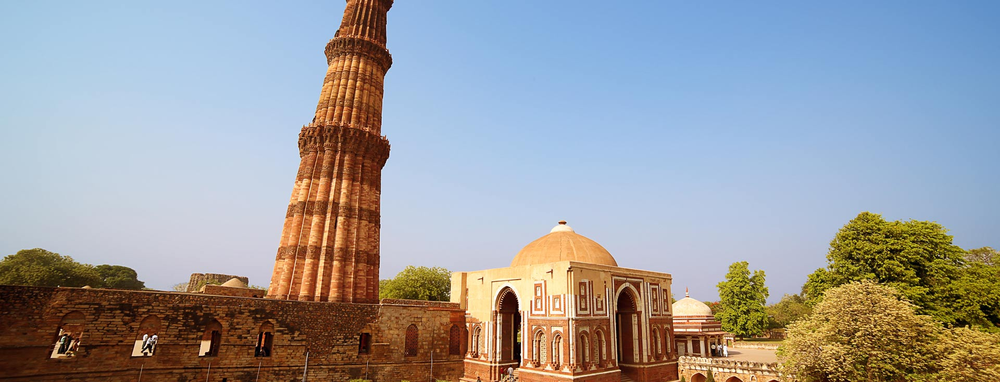
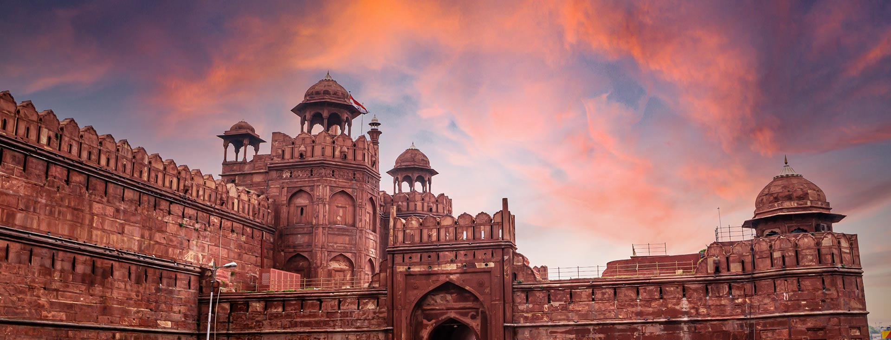
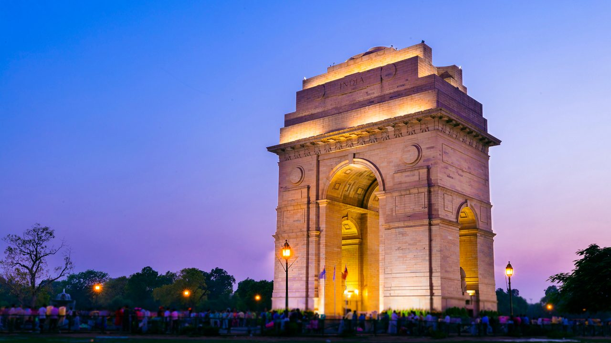
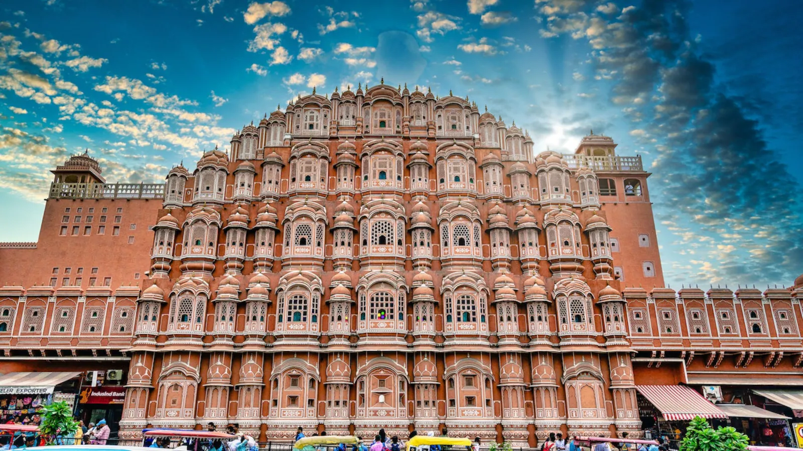
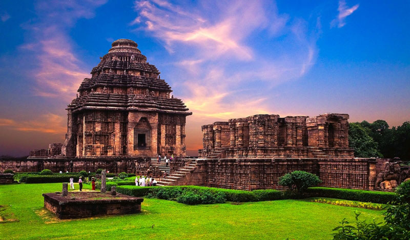

1. Taj Mahal - Agra

A symbol of love built by Shah Jahan in memory of Mumtaz Mahal.
The Taj Mahal, located in Agra, India, is a stunning symbol of love and one of the most iconic monuments in
the world. Built by Mughal Emperor Shah Jahan in memory of his beloved wife Mumtaz Mahal, this white marble
masterpiece stands as a UNESCO World Heritage Site and attracts millions of visitors every year.
2. Qutub Minar - Delhi

The tallest brick minaret in the world, built in 1193.
The Qutub Minar, located in Delhi, India, is one of the tallest brick minarets in the world. Standing at 73
meters, it was built in 1193 by Qutb-ud-din Aibak and later completed by his successors. This UNESCO World
Heritage Site is a fine example of Indo-Islamic architecture.
3. Red Fort - Delhi
A massive fort built by Shah Jahan, a UNESCO World Heritage site.
The Red Fort, located in Delhi, India, is a magnificent red sandstone fortress built by Mughal Emperor Shah
Jahan in 1648. It served as the main residence of the Mughal emperors for nearly 200 years. Today, it stands
as a symbol of India’s rich history and independence, where the Prime Minister hoists the national flag every
year on Independence Day.
4. India Gate - Delhi

A war memorial for soldiers who died in World War I.
India Gate, located in New Delhi, is a war memorial built in honor of the 70,000 Indian soldiers who died
during World War I. Designed by Sir Edwin Lutyens and inaugurated in 1931, it stands 42 meters tall and is an
iconic symbol of bravery and sacrifice. The eternal flame, Amar Jawan Jyoti, was later added to honor soldiers
who died in the 1971 war.
5. Gateway of India - Mumbai

An iconic structure built to commemorate the visit of King George V.
The Gateway of India, located in Mumbai, Maharashtra, is a majestic arch monument built during the 20th
century. It was completed in 1924 to commemorate the visit of King George V and Queen Mary to India in 1911.
Overlooking the Arabian Sea, it stands as a historic symbol of colonial legacy and is one of Mumbai’s most
famous landmarks.
6. Hawa Mahal - Jaipur

Also known as the "Palace of Winds", built for royal women to observe street festivals.
The Hawa Mahal, or "Palace of Winds," is a stunning pink sandstone structure located in Jaipur, Rajasthan.
Built
in 1799 by Maharaja Sawai Pratap Singh, it has 953 small windows (jharokhas) designed to allow royal ladies to
observe street festivals without being seen. Its unique honeycomb design and cooling breeze make it an
architectural wonder and a symbol of Jaipur.
7. Mysore Palace - Mysuru

A magnificent palace showcasing Indo-Saracenic architecture.
The Hawa Mahal, or "Palace of Winds," is a stunning pink sandstone structure located in Jaipur, Rajasthan.
Built in 1799 by Maharaja Sawai Pratap Singh, it has 953 small windows (jharokhas) designed to allow royal
ladies to observe street festivals without being seen. Its unique honeycomb design and cooling breeze make it
an architectural wonder and a symbol of Jaipur.
8. Charminar - Hyderabad

A monument and mosque, built in 1591 by Muhammad Quli Qutb Shah.
The Charminar, located in Hyderabad, Telangana, is an iconic monument built in 1591 by Muhammad Quli Qutb Shah
to commemorate the end of a deadly plague. Its name means "Four Minarets" and it features stunning
Indo-Islamic architecture with intricate carvings. Surrounded by bustling markets, it remains a symbol of
Hyderabad’s rich heritage and culture.
9. Sanchi Stupa - Madhya Pradesh

One of the oldest stone structures in India, built by Emperor Ashoka.
The Sanchi Stupa, located in Madhya Pradesh, is one of the oldest stone structures in India. Built by Emperor
Ashoka in the 3rd century BCE, it is a sacred Buddhist monument that houses relics of Lord Buddha. The Great
Stupa is famous for its large dome, carved gateways (toranas), and detailed stone art representing scenes from
Buddha’s life. It is a UNESCO World Heritage Site and a symbol of peace and spirituality.
10. Sun Temple - Konark

A 13th-century temple built in the shape of a colossal chariot.
The Sun Temple at Konark, located in Odisha, is a 13th-century architectural marvel built by King
Narasimhadeva I. Designed in the shape of a gigantic chariot of the Sun God (Surya), it has 24 intricately
carved stone wheels and is drawn by seven horses. This UNESCO World Heritage Site is a symbol of India's rich
cultural and artistic heritage and is known for its stunning stone carvings and scientific precision.